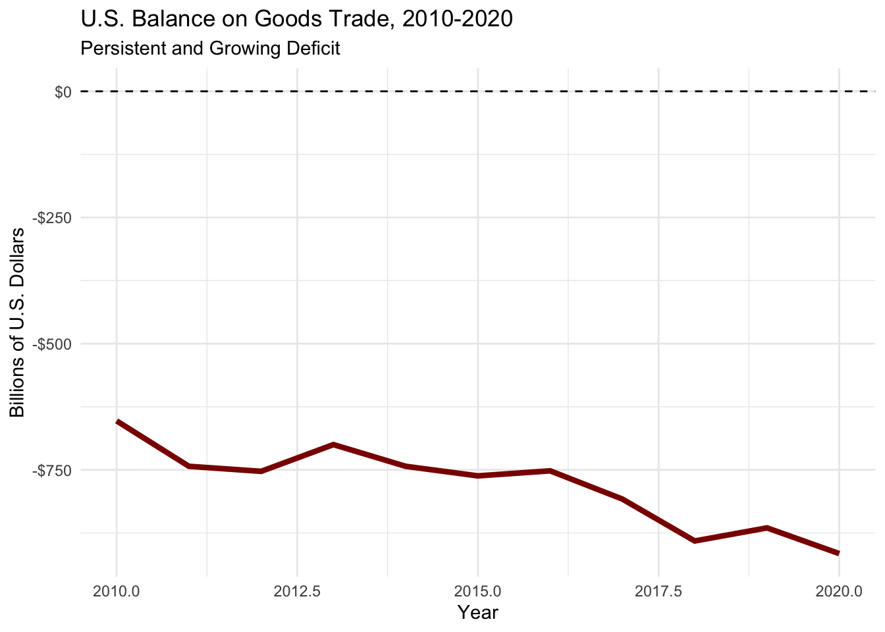
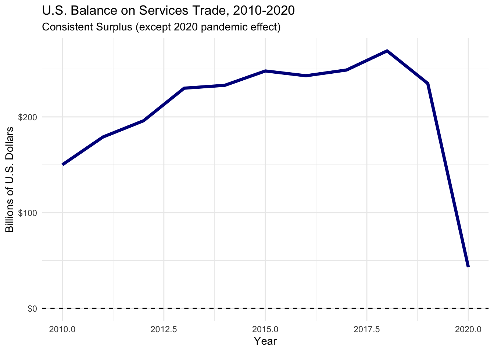
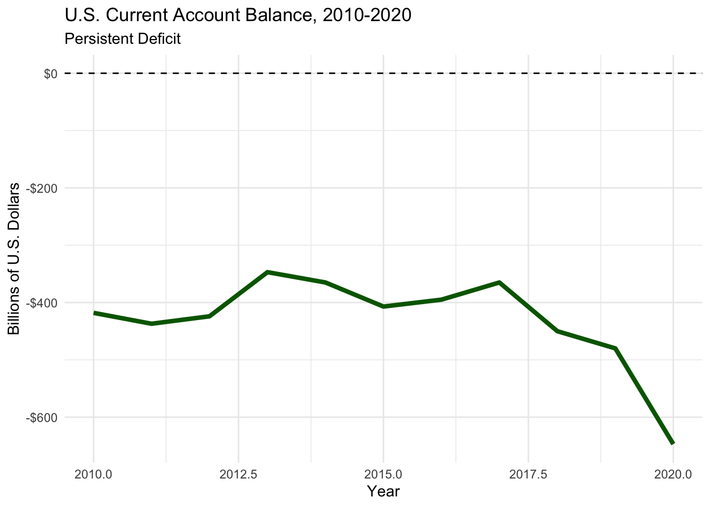
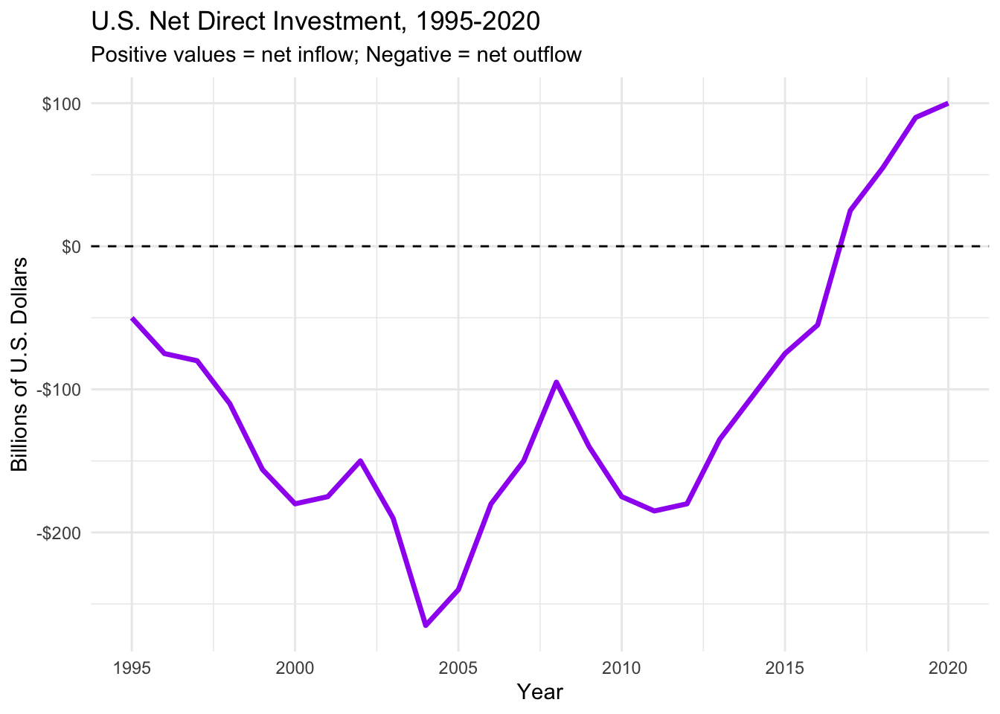
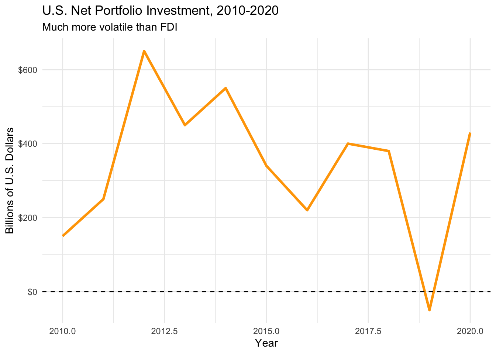
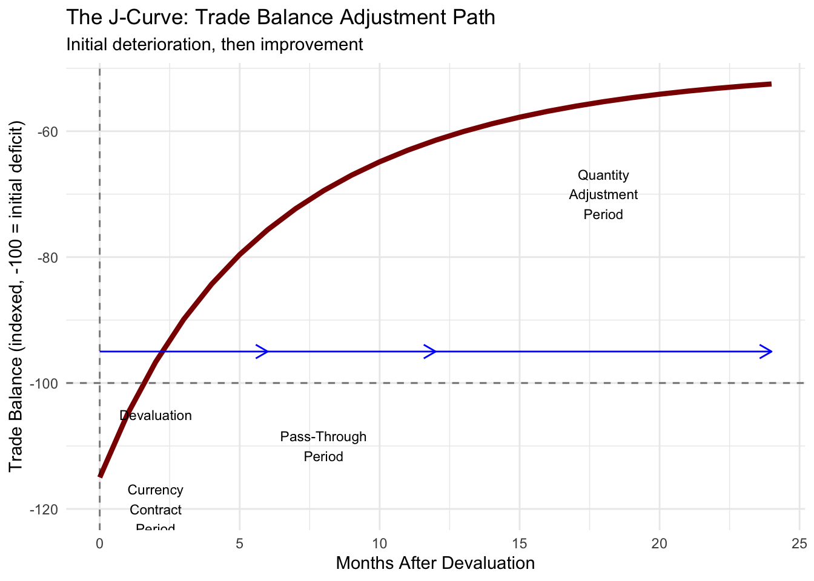

In this chapter we will explore one of the most fundamental analytical tools in international finance: the Balance of Payments.
Opening Scenario: Imagine you’re the CEO of a major U.S. company. You just read this morning’s Wall Street Journal headline: “U.S. Trade Deficit Hits Record High.” Your CFO enters your office concerned about what this means for your business. Should you be worried? Should you hedge your foreign exchange exposure? Should you accelerate foreign investment?
To answer these questions intelligently, you need to understand the balance of payments.
Key Quote from Chapter:
“The sort of dependence that results from exchange, i.e., from commercial transactions, is a reciprocal dependence. We cannot be dependent upon a foreigner without his being dependent on us.” - Frédéric Bastiat
Why the Balance of Payments Matters
The BOP matters to three key groups:
1. Business Managers and Investors - Signals potential exchange rate changes - Indicates possible capital controls - Forecasts market potential for exports/imports - Reveals investment restrictions or opportunities
2. Government Policymakers - Guides monetary and fiscal policy decisions - Influences trade policy - Affects currency intervention decisions
Trade Balances and Exchange Rates - The J-curve and devaluation effects
Capital Mobility - Historical patterns, controls, and the globalization of capital
1 Fundamentals of BOP Accounting
1.1 What IS the Balance of Payments?
CRITICAL DEFINITION: The balance of payments (BOP) is the measurement of ALL international economic transactions between the residents of a country and foreign residents over a period of time, typically a year.
1.1.1 Key Clarifications
“Residents” doesn’t just mean individuals: - Individuals - Businesses - Government entities - Any entity domiciled in the country
“International economic transactions” include: - Trade in goods (merchandise) - Trade in services (banking, consulting, tourism) - Investment flows (buying stocks, bonds, real estate abroad) - Currency transactions - Transfer payments
1.2 Common Misconceptions About the BOP
1.2.1 Misconception #1: “The BOP is a Balance Sheet”
WRONG! The terminology is misleading.
The word “balance” suggests a balance sheet (like a company’s assets and liabilities at a point in time)
But the BOP is actually a FLOW STATEMENT
More like an income statement or cash flow statement
Records flows over a period of time (usually a year)
Important Note: There IS a related measure called the Net International Investment Position (NIIP) that functions like a balance sheet - we’ll discuss this later.
1.2.2 Misconception #2: “The BOP Can Be in Disequilibrium”
WRONG! This is crucial to understand.
The phrase “the balance of payments is in disequilibrium” is technically incorrect. The BOP MUST balance. Always. By definition.
What people really mean: - A sub-account (like the current account) is in deficit or surplus - “The balance of trade is in deficit” ✓ - “The current account is in surplus” ✓ - “The BOP is in disequilibrium” ✗
1.2.3 Misconception #3: “Debits and Credits Work Like Corporate Accounting”
PARTIALLY WRONG! The BOP uses double-entry bookkeeping but with unique definitions:
BOP Credit (+): - An event that earns foreign exchange - An inflow of foreign exchange - Examples: Exports of goods, foreign investment into your country
BOP Debit (−): - An event that spends foreign exchange - An outflow of foreign exchange
- Examples: Imports of goods, domestic investment abroad
1.3 The BOP as a Cash Flow Statement
Think of the BOP as tracking TWO fundamental types of transactions:
Transaction: A U.S. company exports tractors to Brazil and receives payment. - Classification: Current account (goods), CREDIT (+) - Why? Money flows INTO the U.S.
Transaction: A Japanese company buys U.S. Treasury bonds. - Classification: Financial account, CREDIT (+)
- Why? Money (capital) flows INTO the U.S.
Transaction: An American tourist pays for a hotel in Paris. - Classification: Current account (services - travel), DEBIT (−) - Why? Money flows OUT OF the U.S.
Transaction: A U.S. pension fund buys shares in a German company. - Classification: Financial account, DEBIT (−) - Why? Money (capital) flows OUT OF the U.S.
1.4 The BOP Identity
At the highest level, the BOP can be summarized with this equation:
Plus two “balancing” accounts: - Net Errors and Omissions - Statistical adjustment - Official Reserves - Government foreign exchange holdings
Let’s examine each in detail.
2.2 The Current Account
Definition: Includes all international economic transactions with income or payment flows occurring within the year (the current period).
2.2.1 The Four Components of the Current Account
2.2.1.1 1. Goods Trade (Merchandise Trade)
What it includes: - Physical products: cars, electronics, food, clothing, machinery - The oldest form of international economic activity - Most visible component
The Balance of Trade (BOT): - Goods exports MINUS goods imports - Most quoted BOP statistic in business press - “Trade surplus” or “trade deficit”
U.S. Example: Let me show you the U.S. pattern:
Code
# U.S. Balance on Goods (billions of dollars)years <-2010:2020goods_balance <-c(-653, -743, -753, -700, -743, -762, -752, -808, -891, -865, -916)library(ggplot2)df_goods <-data.frame(Year = years, Balance = goods_balance)ggplot(df_goods, aes(x = Year, y = Balance)) +geom_line(color ="darkred", size =1.5) +geom_hline(yintercept =0, linetype ="dashed") +labs(title ="U.S. Balance on Goods Trade, 2010-2020",subtitle ="Persistent and Growing Deficit",y ="Billions of U.S. Dollars",x ="Year") +theme_minimal() +scale_y_continuous(labels = scales::dollar_format())
Warning: Using `size` aesthetic for lines was deprecated in ggplot2 3.4.0.
ℹ Please use `linewidth` instead.

What drives goods trade? - Imports: Domestic income levels, economic growth, relative prices - Exports: Foreign income levels, foreign economic growth, relative prices - Exchange rates: Affects relative prices
2.2.1.2 2. Services Trade
What it includes: - Financial services (banking fees, insurance) - Transportation (shipping, airline tickets) - Travel and tourism - Business services (consulting, legal, accounting) - Telecommunications - Royalties and license fees - Education (international students)
Key Point: This is the fastest-growing component for developed economies.
Why? Modern economies increasingly service-based, services increasingly tradeable (digitization).
U.S. Example:
Code
# U.S. Balance on Services (billions of dollars)services_balance <-c(150, 179, 196, 230, 233, 248, 243, 249, 269, 235, 43)df_services <-data.frame(Year = years, Balance = services_balance)ggplot(df_services, aes(x = Year, y = Balance)) +geom_line(color ="darkblue", size =1.5) +geom_hline(yintercept =0, linetype ="dashed") +labs(title ="U.S. Balance on Services Trade, 2010-2020",subtitle ="Consistent Surplus (except 2020 pandemic effect)",y ="Billions of U.S. Dollars",x ="Year") +theme_minimal() +scale_y_continuous(labels = scales::dollar_format())

Notable: U.S. consistently runs services surplus. This partially offsets goods deficit.
2.2.1.3 3. Primary Income
What it includes: - Investment income: Dividends and interest from previous investments - A U.S. company earned profits from its UK subsidiary last year → pays dividend to U.S. parent this year - Compensation of employees: Wages paid to non-resident workers - A Mexican citizen works in the U.S., sends wages home
Critical Distinction: - The investment happened in a previous period (recorded in financial account then) - The income from that investment happens now (recorded in current account)
Example: In 2015, Apple invested $500 million building a manufacturing plant in China (financial account outflow in 2015). In 2023, that plant generates $50 million in profits that Apple repatriates to the U.S. (current account inflow in 2023).
2.2.1.4 4. Secondary Income (Current Transfers)
What it includes: - Government grants and aid - Personal remittances (migrant workers sending money home) - Gifts - Pensions - Humanitarian aid
Key Characteristic: These are one-way transfers. No quid pro quo. Not payment for goods, services, or assets.
Important Topic - Global Remittances:
The mini-case in your textbook discusses this. Remittances have become HUGE: - $700+ billion globally in 2020 - For many countries, exceeds foreign direct investment - Critical for economic development - For some countries, 20-30% of GDP!
Example: Philippines received $35 billion in remittances in 2020 - money sent home by Filipino workers abroad. This is their second-largest source of foreign exchange after exports.
2.2.2 Putting It Together: The Current Account Balance
# U.S. Current Account Balance (billions of dollars)current_account <-c(-418, -437, -424, -347, -365, -407, -395, -365, -450, -480, -647)df_current <-data.frame(Year = years, Balance = current_account)ggplot(df_current, aes(x = Year, y = Balance)) +geom_line(color ="darkgreen", size =1.5) +geom_hline(yintercept =0, linetype ="dashed") +labs(title ="U.S. Current Account Balance, 2010-2020",subtitle ="Persistent Deficit",y ="Billions of U.S. Dollars",x ="Year") +theme_minimal() +scale_y_continuous(labels = scales::dollar_format())

What does this tell us? - U.S. consistently spends more abroad than it earns from abroad - This represents either: - Borrowing from abroad (increasing liabilities) - Selling assets to foreigners - Drawing down reserves
We’ll see how this connects to the financial account shortly.
2.3 The Capital Account
Quick Note: This is relatively small and often gets lumped with the financial account in discussions.
What it includes: - Transfers of non-produced, non-financial assets - Debt forgiveness - Migrants’ transfers of assets when moving
Example: A family immigrates from India to the U.S., bringing $50,000 in savings. This is a capital account transaction.
Magnitude: Usually billions (small) compared to trillions in current and financial accounts.
2.4 The Financial Account
This is where it gets interesting. The financial account measures investment flows.
2.4.1 The Three Main Components
2.4.1.1 1. Direct Investment (FDI)
Definition: Investment that involves a long-term commitment and significant control over assets.
Key Threshold: Minimum 10% ownership stake.
Examples of FDI Inflow to U.S. (Credit): - Toyota builds a manufacturing plant in Kentucky - Shell Oil (Dutch company) buys a refinery in Texas - A Chinese company purchases 15% stake in a U.S. tech startup
Examples of FDI Outflow from U.S. (Debit): - Ford builds an assembly plant in Mexico - Google opens offices and data centers in Singapore - A U.S. private equity firm acquires a controlling stake in a French company
Why FDI Matters: - Creates jobs (usually) - Transfers technology and expertise - Longer-term commitment (harder to reverse quickly) - Generally viewed positively by host countries
Controversial Aspects: - Foreign control of domestic assets - Who receives the profits? - National security concerns
Historical Example: In the 1980s, Japanese companies (Sony, Honda, Toyota) made large FDI in the U.S. This created political controversy. “Are we selling America?”
Modern Parallel: Chinese FDI in the U.S. faces even greater scrutiny today due to national security concerns.
Net Direct Investment - U.S. Example:
Code
# U.S. Net Direct Investment (billions, positive = net inflow)years_fdi <-1995:2020# Sample data reflecting typical pattern - large volatilitynet_fdi <-c(-50, -75, -80, -110, -156, -180, -175, -150, -190, -265,-240, -180, -150, -95, -140, -175, -185, -180, -135, -105,-75, -55, 25, 55, 90, 100)df_fdi <-data.frame(Year = years_fdi, NetFDI = net_fdi)ggplot(df_fdi, aes(x = Year, y = NetFDI)) +geom_line(color ="purple", size =1.2) +geom_hline(yintercept =0, linetype ="dashed") +labs(title ="U.S. Net Direct Investment, 1995-2020",subtitle ="Positive values = net inflow; Negative = net outflow",y ="Billions of U.S. Dollars",x ="Year") +theme_minimal() +scale_y_continuous(labels = scales::dollar_format())

Pattern: U.S. companies investing abroad (outflows) generally exceeded foreign companies investing in U.S. (inflows) for most years, but this has reversed recently.
2.4.1.2 2. Portfolio Investment
Definition: Investment in financial assets (stocks, bonds) without significant control.
Key Distinction from FDI: - Typically less than 10% ownership - Motivated by return, not control - Short-term oriented - Easily reversible (“hot money”)
Examples of Portfolio Inflow to U.S. (Credit): - A German pension fund buys U.S. Treasury bonds - A Japanese investor purchases 100 shares of Apple stock - A Chinese insurance company invests in U.S. corporate bonds
Examples of Portfolio Outflow from U.S. (Debit): - A U.S. mutual fund buys Mexican government bonds - An American individual invests in European stocks - A U.S. pension fund purchases bonds issued by an Australian company
Why Portfolio Investment Matters: - MUCH larger in volume than FDI - Can move VERY quickly (contributing to financial crises) - Drives exchange rates in the short run - Connects national financial markets
The “Hot Money” Problem:
Portfolio capital can flee a country rapidly during a crisis: - 1997-98 Asian Financial Crisis - 2001 Argentine Crisis
- 2008-09 Global Financial Crisis - 2013 “Taper Tantrum”
Example - Asian Crisis: In early 1997, billions of dollars of portfolio capital flowed INTO Thailand, Malaysia, Indonesia. By late 1997, tens of billions flowed OUT in a matter of weeks. Currencies collapsed.
U.S. Net Portfolio Investment:
Code
# U.S. Net Portfolio Investment (billions, positive = net inflow)years_port <-2010:2020net_portfolio <-c(150, 250, 650, 450, 550, 340, 220, 400, 380, -50, 430)df_port <-data.frame(Year = years_port, NetPortfolio = net_portfolio)ggplot(df_port, aes(x = Year, y = NetPortfolio)) +geom_line(color ="orange", size =1.2) +geom_hline(yintercept =0, linetype ="dashed") +labs(title ="U.S. Net Portfolio Investment, 2010-2020",subtitle ="Much more volatile than FDI",y ="Billions of U.S. Dollars",x ="Year") +theme_minimal() +scale_y_continuous(labels = scales::dollar_format())

Key Observation: Much more volatile year-to-year than FDI. This is “hot money.”
2.4.1.3 3. Other Asset Investment
What it includes: - Trade credits - Bank loans and deposits - Currency holdings - Other receivables and payables
Example: A U.S. exporter extends 90-day credit to a Brazilian importer. This is recorded here.
2.4.2 The Fundamental Relationship: Current Account ↔︎ Financial Account
This is CRITICAL to understand:
In a well-functioning economy with flexible exchange rates:
In words: - A current account deficit is typically matched by a financial account surplus - A current account surplus is typically matched by a financial account deficit
Why? The BOP must balance! If you’re spending more abroad than you’re earning (current account deficit), you must be either: 1. Borrowing from abroad, or 2. Selling assets to foreigners
Both of these are financial account inflows (surplus).
U.S. Example - The Inverse Relationship:
Code
# Comparing current and financial accountsyears_comp <-2012:2020current_acct <-c(-424, -347, -365, -407, -395, -365, -450, -480, -647)financial_acct <-c(293, 327, 366, 332, 425, 400, 753, 452, 397)df_comp <-data.frame(Year =rep(years_comp, 2),Balance =c(current_acct, financial_acct),Account =rep(c("Current Account", "Financial Account"), each =length(years_comp)))ggplot(df_comp, aes(x = Year, y = Balance, color = Account)) +geom_line(size =1.2) +geom_hline(yintercept =0, linetype ="dashed") +labs(title ="U.S. Current Account vs. Financial Account",subtitle ="Note the inverse relationship",y ="Billions of U.S. Dollars",x ="Year") +theme_minimal() +scale_y_continuous(labels = scales::dollar_format()) +scale_color_manual(values =c("darkgreen", "darkblue"))
See the pattern? When current account is negative (below zero), financial account is positive (above zero).
What does this mean? The U.S. has been running large current account deficits. How is this financed? By foreigners investing in U.S. assets (buying Treasury bonds, stocks, real estate, companies).
2.4.3 Breaking the Rules: China’s Twin Surpluses
Normally impossible, but China managed it for years!
The Typical Pattern: - Current account surplus → financial account deficit (capital outflow) - Current account deficit → financial account surplus (capital inflow)
China (2006-2013): - Current account: SURPLUS (earning more abroad than spending) - Financial account: ALSO SURPLUS (capital flowing in)
How was this possible?
Massive export success → current account surplus
Attractive investment destination → FDI inflows
Strict capital controls → prevented money from leaving
Currency intervention → government soaked up excess dollars
Result: China accumulated $4 trillion in foreign exchange reserves!
The Impossible Trinity in Action: China demonstrated that with: - Fixed exchange rate (to the dollar) - Capital controls - Independent monetary policy
You CAN temporarily have surpluses in both accounts. But this is not sustainable long-term without controls.
Notice: Starting around 2014, pattern shifts toward “normal” - current surplus with financial deficit.
2.5 Net Errors and Omissions
Purpose: Make the BOP actually balance.
Why needed? - Data collected by different agencies - Different timing - Different methodologies
- Some transactions unreported (illegal trade, money laundering) - Honest mistakes
Typical magnitude: Tens of billions for large economies like the U.S.
Red flag: If net errors and omissions becomes very large, suggests: - Major capital flight - Significant illegal activity - Serious data collection problems
2.6 Official Reserves
Definition: Foreign currency assets held by a country’s central bank.
What’s included: - Major foreign currencies (dollars, euros, yen) - Gold - Special Drawing Rights (SDRs) from IMF
Role depends on exchange rate regime:
Fixed Exchange Rate: - Reserves are critical - Used to defend the peg - Can run out! (forces devaluation)
Floating Exchange Rate: - Reserves less critical - Used for occasional intervention - “War chest” for emergencies
Example - China’s Reserves:
At peak (2014): Nearly $4 trillion
This allowed China to: - Defend the yuan if needed - Weather financial crises - Project economic power
3 BOP Impacts on Key Macroeconomic Rates (10 minutes)
The BOP both influences and is influenced by three key macroeconomic variables: 1. Exchange rates 2. Interest rates
3. Inflation rates
How this affects exchange rates depends on the exchange rate regime:
3.1.2 Fixed Exchange Rate Countries
Government’s Responsibility: Keep \(BOP \approx 0\) by intervening in FX markets.
Scenario 1: Current + Capital + Financial Accounts > 0 (Surplus) - Excess DEMAND for domestic currency - Domestic currency wants to APPRECIATE - To prevent appreciation and maintain fixed rate: - Government SELLS domestic currency - BUYS foreign currency (increases reserves)
Scenario 2: Current + Capital + Financial Accounts < 0 (Deficit) - Excess SUPPLY of domestic currency
- Domestic currency wants to DEPRECIATE - To prevent depreciation and maintain fixed rate: - Government BUYS domestic currency - SELLS foreign currency (decreases reserves)
Critical Problem: Reserves can run out! Then forced to devalue.
Historical Example - British Pound (1992): - UK trying to maintain pound’s value in European Exchange Rate Mechanism - Current + financial accounts in deficit - Bank of England spent billions buying pounds - Reserves depleted - Forced to abandon fixed rate - Pound fell 15% in a day - Cost UK taxpayers billions
The “Speculator” Story: George Soros famously bet against the pound, made $1 billion in profit. Was he evil? Or just recognizing the inevitable?
3.1.3 Floating Exchange Rate Countries
Government’s Responsibility: None! Let the market determine the rate.
Scenario: Current + Capital + Financial Accounts < 0 (Deficit) - Excess SUPPLY of domestic currency on world markets - Like any good in excess supply, price falls - Currency DEPRECIATES automatically - This (eventually) corrects the imbalance: - Depreciation makes exports cheaper → exports ↑ - Depreciation makes imports more expensive → imports ↓ - Current account improves
Key Point: In theory, floating rates are self-correcting. No reserves needed.
Reality: Doesn’t always work smoothly or quickly (we’ll discuss J-curve shortly).
3.1.4 Managed Floats (Most Common Today)
What most countries actually do: - Claim to have “floating” rate - But intervene occasionally to: - Smooth volatility - Prevent “overshooting” - Maintain competitiveness
Tool: Change interest rates to influence capital flows.
Example: Country’s currency depreciating too fast: - Raise domestic interest rates - This attracts foreign capital (portfolio investment) - Increased capital inflow supports currency - Currency stabilizes
Trade-off: Higher interest rates slow domestic economy. Political cost.
3.2 The BOP and Interest Rates
Two-way relationship:
3.2.1 Interest Rates → BOP
Relatively HIGH domestic interest rates: - Attract foreign portfolio investment - Financial account SURPLUS (capital inflows) - Supports currency value - But raises domestic borrowing costs
Relatively LOW domestic interest rates: - Encourage capital to seek higher returns abroad - Financial account DEFICIT (capital outflows) - Weakens currency value - But stimulates domestic economy
3.2.2 BOP → Interest Rates
Large current account deficit financed by foreign investment: - Foreigners buying domestic bonds keeps interest rates LOW - U.S. example: Despite huge deficits and government borrowing, U.S. rates stayed low (until recently) - Why? Foreign demand for U.S. Treasuries (China, Japan, oil exporters)
Current account surplus: - Country exporting capital - Can lead to LOW domestic interest rates (excess savings) - Japan example: Decades of current account surplus, near-zero interest rates
3.3 The BOP and Inflation Rates
3.3.1 Imports as Anti-Inflation Tool
Mechanism: - Import of low-priced goods puts ceiling on domestic prices - Foreign competition limits what domestic firms can charge - Greater imports → lower inflation (all else equal)
Example - Walmart Effect: - Walmart sources globally, offers low prices - Forces competitors to lower prices - Benefits consumers (lower prices) - But costs jobs in domestic manufacturing
Trade-off: - Lower inflation - But lower GDP and employment (if imports replace domestic production)
3.3.2 The Policy Dilemma
Countries must balance: - Benefits of open trade (lower inflation, more consumer choice) - Costs of open trade (job losses, industry decline)
Political Reality: The benefits are diffuse (all consumers benefit slightly), costs are concentrated (specific workers/industries hurt badly). This creates political pressure for protectionism.
4 Trade Balances and Exchange Rates (12 minutes)
4.1 The Theory: Devaluation Improves Trade Balance
Simple Logic: 1. Country devalues its currency (or currency depreciates in floating regime) 2. Exports become cheaper for foreign buyers → export quantity ↑ 3. Imports become more expensive for domestic buyers → import quantity ↓ 4. Trade balance improves
Sounds straightforward, right? Not so fast!
4.2 The J-Curve Adjustment Path
Reality is more complex. The trade balance adjustment follows three stages:
4.2.1 Stage 1: Currency Contract Period (Months 0-3)
What happens: - Currency suddenly devalues/depreciates - BUT existing contracts already in place - Exporters and importers must fulfill obligations
Assume: U.S. dollar suddenly depreciates 20%
Impact on U.S. trade balance: - Exports: Most contracts denominated in dollars → revenue unchanged
- Imports: Many contracts denominated in foreign currency → dollar cost INCREASES - Net effect: Trade balance gets WORSE!
Example: - Before: U.S. imports €100 million of German goods, €1 = $1.20, cost = $120 million - After 20% dollar depreciation: €1 = $1.44, same €100 million now costs $144 million - U.S. import bill increased by $24 million - Exports unchanged (contracts already signed in dollars) - Trade deficit larger!
Graphical Representation:
Code
# Simulating J-Curvemonths <-0:24# Trade balance starts at -100, gets worse, then improvestrade_balance <--100+ (-15*exp(-months/3)) + (50* (1-exp(-months/8)))df_jcurve <-data.frame(Months = months, TradeBalance = trade_balance)ggplot(df_jcurve, aes(x = Months, y = TradeBalance)) +geom_line(color ="darkred", size =1.5) +geom_hline(yintercept =-100, linetype ="dashed", color ="gray50") +geom_vline(xintercept =0, linetype ="dashed", alpha =0.5) +annotate("text", x =2, y =-105, label ="Devaluation", size =3) +annotate("text", x =2, y =-120, label ="Currency\nContract\nPeriod", size =3) +annotate("text", x =8, y =-110, label ="Pass-Through\nPeriod", size =3) +annotate("text", x =18, y =-70, label ="Quantity\nAdjustment\nPeriod", size =3) +annotate("segment", x =0, xend =6, y =-95, yend =-95, arrow =arrow(length =unit(0.3, "cm")), color ="blue") +annotate("segment", x =6, xend =12, y =-95, yend =-95,arrow =arrow(length =unit(0.3, "cm")), color ="blue") +annotate("segment", x =12, xend =24, y =-95, yend =-95,arrow =arrow(length =unit(0.3, "cm")), color ="blue") +labs(title ="The J-Curve: Trade Balance Adjustment Path",subtitle ="Initial deterioration, then improvement",x ="Months After Devaluation",y ="Trade Balance (indexed, -100 = initial deficit)") +theme_minimal()

See the “J” shape? Gets worse before it gets better.
4.2.2 Stage 2: Pass-Through Period (Months 3-9)
What happens: - Old contracts expire, new ones negotiated - Exchange rate changes “pass through” to prices - Foreign exporters to U.S. raise dollar prices (to cover costs in their currency) - U.S. exporters can now price more competitively in foreign markets
U.S. import prices: ↑ (foreign goods more expensive in dollars) U.S. export prices: ↓ (U.S. goods cheaper in foreign currency)
Critical Question: Do foreign exporters pass through the FULL exchange rate change?
Often NO!
Example - Japanese Auto Exports to U.S.: - Yen appreciates 20% vs. dollar - In theory, Japanese cars should be 20% more expensive in U.S. - In practice, Japanese manufacturers often raise prices only 5-10% - They absorb some of the exchange rate change (lower profit margins) - Why? To maintain market share
This is called “pricing to market” - very common with manufactured goods.
4.2.3 Stage 3: Quantity Adjustment Period (Months 9+)
What happens: - Prices have adjusted - Consumers respond to new prices - Import demand decreases (more expensive) - Export demand increases (cheaper) - Trade balance IMPROVES
Critical Factors:
Price Elasticity of Demand: - How responsive is quantity demanded to price changes? - High elasticity → big quantity response → trade balance improves significantly - Low elasticity → small quantity response → trade balance barely improves
Example:
High elasticity: Consumer electronics - Dollar depreciates 20% - Korean TVs now 20% more expensive in U.S. - U.S. consumers buy fewer Korean TVs, more U.S.-made alternatives - Import quantity drops significantly
Low elasticity: Oil - Dollar depreciates 20% - Oil 20% more expensive in dollars - U.S. still needs oil (few alternatives in short run) - Import quantity barely changes - Import bill actually increases (higher price × similar quantity)
4.2.4 The Marshall-Lerner Condition
For devaluation to improve the trade balance:
\[|\varepsilon_X| + |\varepsilon_M| > 1\]
Where: - \(\varepsilon_X\) = price elasticity of demand for exports - \(\varepsilon_M\) = price elasticity of demand for imports
In words: The sum of elasticities must exceed 1.
If this condition is NOT met: Devaluation can worsen the trade balance even in the long run!
Empirical Evidence: For most industrialized countries, condition is met, but adjustment takes 12-24 months.
Where: - \(P_X^{\$}\) = price of exports in dollars - \(Q_X\) = quantity of exports - \(S^{\$/fc}\) = spot exchange rate (dollars per foreign currency) - \(P_M^{fc}\) = price of imports in foreign currency - \(Q_M\) = quantity of imports
Immediate impact of devaluation (Stage 1): - \(S^{\$/fc}\) increases (takes more dollars to buy foreign currency) - \(Q_X\) and \(Q_M\) unchanged (contracts already signed) - Import bill increases - Trade balance worsens
Later impact (Stage 3): - \(Q_X\) increases (exports cheaper to foreigners) - \(Q_M\) decreases (imports more expensive to domestic buyers) - If elasticities are high enough, quantity effects dominate price effects - Trade balance improves
4.4 Real-World Complications
4.4.1 1. “Expenditure Switching” May Not Occur
Problem: Even if imports become expensive, domestic alternatives may not exist.
Example: U.S. manufacturing of certain goods has disappeared: - Consumer electronics - Textiles and apparel - Some machinery
Even if Chinese imports become 30% more expensive, Americans may have to keep buying them (no U.S.-made alternative).
4.4.2 2. Global Supply Chains
Modern reality: Most products are made with inputs from multiple countries.
Example: iPhone - Designed in California - Assembled in China - Components from Japan, Korea, Taiwan, Germany - Software from U.S.
When the dollar depreciates: - Yes, iPhones assembled in China become cheaper for Europeans - But many components are bought in dollars (U.S.-designed chips) - Net effect on trade balance is ambiguous
4.4.3 3. Commodity Dependence
If country heavily depends on imported commodities (oil, food): - Demand is price inelastic - Devaluation increases import bill - May not improve trade balance much (or at all)
Example - India: - Imports 80% of oil - Rupee depreciates - Oil bill increases dramatically - Trade balance may worsen despite cheaper exports
5 Capital Mobility (12 minutes)
5.1 Current Account versus Financial Account Capital Flows
We need to distinguish between two types of international capital flows:
5.1.1 Current Account Capital Flows
Associated with trade in goods and services: - Payment for exports/imports - Trade credits - Related financial transactions
Associated with investment: - Portfolio investment (stocks, bonds) - Direct investment (FDI) - Bank loans - Currency speculation
Characteristics: - Can be massive in magnitude - Can reverse very quickly (“hot money”) - Driven by expectations, sentiment, risk appetite - Can cause financial crises
Key Point: Financial account flows now dwarf current account flows. The financial tail wags the economic dog!
Magnitude Example: - Daily global trade in goods: ~$50 billion - Daily global foreign exchange trading: ~$6.6 trillion - Financial flows are 100+ times larger!
5.2 Historical Patterns of Capital Mobility
Capital has not always moved freely. The degree of capital mobility has varied dramatically over time.
5.2.1 Classical Gold Standard (1870-1914)
Characteristics: - Fixed exchange rates (currencies tied to gold) - Increasing capital mobility (for major powers) - Trade dominated capital flows
Environment: - British Empire at peak - Pax Britannica - relatively stable political environment - Capital flowed to finance trade, infrastructure (railroads) - Colonies and developing countries received investment
Limitations: - Primarily flows among industrialized nations - Many developing countries had limited access - System dependent on gold convertibility
5.2.2 Interwar Years (1923-1938)
Characteristics: - Protectionism and nationalism - Severely restricted capital mobility - Trade barriers erected
Environment: - Great Depression - Competitive devaluations (“beggar thy neighbor”) - Capital controls widespread - International trade collapsed
Result: Economic disaster. Demonstrated the dangers of closing economies.
Characteristics: - Fixed exchange rates (currencies pegged to dollar, dollar to gold) - Free trade encouraged (GATT) - Capital controls permitted (even encouraged)
Key Distinction: - Current account transactions: Free movement of capital - Capital account transactions: Subject to controls
Philosophy: - International trade benefits everyone - International capital flows can be destabilizing - Countries should be able to control capital flows
Why it worked: - Economies recovering from WWII - U.S. economically dominant - Capital controls effective (limited financial innovation)
Why it ended: - Eurocurrency markets grew - Capital controls became porous - Speculation against fixed rates intensified - System collapsed 1971-1973
5.2.4 Floating Exchange Rates (1973-1997)
Characteristics: - Major currencies floating (dollar, pound, yen, mark) - Emerging markets: Varied regimes - Increasing capital mobility for developed countries - Emerging markets: More cautious
Environment: - Financial innovation (derivatives, securitization) - Deregulation and liberalization - Eurocurrency markets expand - Emerging markets start opening up
Divergence: - Developed countries: Embrace capital mobility - Emerging markets: More gradual, often maintaining controls
Result: Growing integration of developed country financial markets.
Ended with: Asian Financial Crisis (1997-1998)
5.2.5 The Emerging Era (1997-Present)
Characteristics: - Emerging markets increasingly important - Massive capital flows to emerging markets - Periodic crises and capital flow reversals - Renewed debate about capital controls
Major Events: - 1997-98: Asian Financial Crisis - 2001: Argentine Crisis
- 2008-09: Global Financial Crisis - 2010-12: European Sovereign Debt Crisis - 2013: “Taper Tantrum” - 2015-16: China capital outflows - 2020: COVID-19 pandemic
Current State: - Capital can move faster and in greater volume than ever - But many countries maintain controls - “Hot money” flows create volatility - Debate about optimal degree of capital openness
5.3 Capital Controls
Definition: Any restriction that limits or alters the rate or direction of capital movement into or out of a country.
5.3.1 Types of Capital Controls
Outflow Controls: Restrictions on residents investing abroad or moving money out - Require approval for foreign investment - Taxes on capital outflows - Limits on amount that can be transferred - Prohibition on certain transactions
Inflow Controls: Restrictions on foreigners investing in the country or types of investment allowed - Taxes on capital inflows (Chile’s encaje) - Required minimum holding periods - Restrictions on sectors (foreigners cannot own media, real estate, etc.) - Limits on foreign ownership percentages
5.3.2 Purposes of Capital Controls
See Exhibit 3.8 in your textbook for comprehensive list. Key purposes:
1. Prevent Currency Appreciation (Chile 1990s) - Problem: Capital flooding in - Currency appreciating - Hurting export competitiveness - Solution: Tax on short-term capital inflows (encaje) - Required percentage of inflow to be deposited interest-free - Effectively a tax, higher for shorter-term investments
2. Prevent Capital Flight (Malaysia 1998) - Problem: Asian Financial Crisis, capital fleeing - Currency collapsing - Solution: Temporarily freeze capital outflows - Allowed trade-related flows - Blocked financial flows - Stabilized currency
3. Maintain Monetary Policy Independence - Problem: Impossible Trinity - Can’t have: fixed exchange rate + capital mobility + independent monetary policy - Solution: Control capital to keep other two
Arguments FOR controls: - Can provide breathing room during crisis - Allow countries to maintain preferred policies - Prevent speculative attacks - Protect sovereignty
Arguments AGAINST controls: - Reduce efficiency of capital allocation - Create opportunities for corruption - Can be evaded (particularly in modern financial system) - May signal weakness, trigger capital flight - Reduce foreign investment
Empirical Evidence: Mixed
Can be effective short-term
Less effective long-term
Controls on inflows more acceptable than controls on outflows
Comprehensive controls more effective than partial
IMF Position (evolved): - Previously: Capital controls generally bad - Now: May be useful tool in some circumstances - Should be temporary - Should be part of broader policy package
5.4 Capital Flight
Definition: Rapid outflow of capital in opposition to or in fear of domestic political and economic conditions and policies.
Characteristics: - Sudden and large - Driven by fear/panic, not return optimization - Often illegal or semi-legal
5.4.1 Mechanisms of Capital Flight
1. Legal Transfers - Normal banking system - Wire transfers - Convert to foreign currency, move abroad
2. Physical Currency Transfer - Literally smuggling cash - Hidden in luggage, containers - Risky, costly, but happens
3. False Invoicing - Over-invoice imports: Pay $150 for $100 of imports, $50 goes to foreign account - Under-invoice exports: Sell $100 of exports for $50, keep $50 abroad
Example: Company in Argentina (fearing peso devaluation): - Imports $1 million of machinery - Bills show $1.5 million - Pays $1.5 million (sends money abroad) - $1 million goes to real supplier - $0.5 million deposited in company’s Swiss account
4. Cryptocurrency (New) - Convert local currency to Bitcoin/crypto - Transfer crypto across borders - Convert to foreign currency abroad - Increasingly used, increasingly tracked by authorities
5.4.2 Famous Capital Flight Episodes
Argentina (2001) - Banks froze accounts - People desperate to get money out - Massive capital flight beforehand contributed to crisis
Venezuela (2000s-present) - Political instability, economic collapse - Those who could move money out - Billions fled - Worsened economic crisis
Russia (2014-2015) - Ukraine crisis, sanctions - Ruble under pressure - Capital flight - Contributed to recession
Reactive: - Capital controls (Malaysia 1998) - Bank freezes (Argentina 2001) - Currency restrictions
Effectiveness: Once capital flight begins, very hard to stop. Prevention much better than cure.
5.5 Globalization of Capital Flows - Benefits and Risks
5.5.1 Benefits of Capital Mobility
1. Efficient Capital Allocation - Capital flows to highest return projects globally - Not constrained by domestic savings
2. Risk Diversification - Investors can diversify globally - Countries can share risks
3. Access to Capital - Developing countries can access foreign savings - Finance development faster
4. Discipline on Governments - Bad policies punished by capital outflows - Provides market discipline
5.5.2 Risks of Capital Mobility
1. Volatility and “Hot Money” - Capital can reverse quickly - Creates boom-bust cycles
2. Contagion - Problems in one country spread to others - “When the U.S. sneezes, emerging markets catch pneumonia”
3. Loss of Policy Autonomy - Impossible Trinity constraints - Market forces may override domestic preferences
4. Inequality - Benefits of globalization unequally distributed - Some win big, some lose
5.5.3 The Current Debate
After 2008 Financial Crisis, even the IMF reconsidered:
“Notwithstanding these benefits [of capital mobility], many EMEs [emerging market economies] are concerned that the recent surge in capital inflows could cause problems… capital controls are again in the news.”
The New Consensus: - Capital mobility has benefits - But unfettered capital flows can be destabilizing - Temporary, targeted capital controls may be appropriate - As part of broader policy package - Not a substitute for good policies
Especially relevant for: - Large, sudden inflows (appreciation pressure) - Highly volatile flows (portfolio “hot money”) - When other policy tools exhausted
6 Conclusion and Synthesis
6.1 Major Themes Recap
6.1.1 The Balance of Payments as an Analytical Tool
What we learned: - The BOP is a comprehensive record of ALL international transactions - It’s a flow statement, not a balance sheet - It MUST balance (by definition) - Sub-accounts can be in surplus or deficit - Provides critical signals about: - Currency pressure - Policy effectiveness - Economic health - International position
6.1.2 The Structure of the BOP
Three major accounts:
1. Current Account: - Goods, services, income, transfers - Most visible (trade balance) - Surplus/deficit has implications for: - Currency value - Domestic production - Employment
2. Capital Account: - Small, often overlooked - Capital transfers, non-produced assets
3. Financial Account: - Direct investment (FDI) - Portfolio investment
- Other investments - Increasingly dominant - Can dwarf current account in magnitude
Fundamental Relationship: - Current account deficit → Financial account surplus (borrowing/selling assets) - Current account surplus → Financial account deficit (lending/buying assets) - Except when governments intervene heavily (China example)
6.1.3 Exchange Rates and the BOP
The interaction depends on exchange rate regime:
Fixed Rates: - Government must intervene with reserves - Deficit draws down reserves (can run out!) - Surplus builds reserves
Floating Rates: - Market determines rate - Deficits → depreciation → eventually corrects - Surpluses → appreciation → eventually corrects
But adjustment is NOT instantaneous!
6.1.4 The J-Curve
Critical insight: - Currency depreciation/devaluation doesn’t immediately improve trade balance - Initially makes it worse - Eventually improves (if elasticities are adequate) - Timing: 12-24 months for full adjustment
Three stages: 1. Currency contract period: Worse 2. Pass-through period: Still worse, but stabilizing 3. Quantity adjustment period: Improvement
Policy implication: Devaluation is not a quick fix. Patience required.
6.1.5 Capital Mobility - Evolution and Implications
Historical perspective: - Capital mobility has varied dramatically over time - Not a one-way trend toward openness - Depends on political-economic philosophy of the era
Current era: - Unprecedented capital mobility (developed countries) - Emerging markets more varied - Financial flows >>> trade flows - Can be destabilizing
The Debate: - Benefits: Efficiency, growth, diversification - Costs: Volatility, crisis, inequality - No consensus on optimal degree of openness - Context-dependent
6.2 Connecting to the Real World
6.2.1 Why This Matters for Business
1. Currency Exposure Management - BOP trends signal currency movements - Current account deficit + capital outflows = depreciation pressure - Time to hedge?
2. Market Assessment - Is a country’s growth sustainable? - Current account deficit financed by FDI (stable) or portfolio flows (volatile)?
3. Policy Anticipation - BOP problems often lead to: - Capital controls - Currency restrictions - Import barriers - Can affect your operations
Example: You’re a U.S. company exporting to Brazil. Brazil’s current account deficit is widening, reserves are falling, portfolio capital is fleeing. What do you do? - Tighten credit terms - Demand payment in dollars (not reais) - Hedge receivables - Consider reducing exposure
6.2.2 Why This Matters for Policy
National policy dilemmas:
1. The Impossible Trinity - Can’t have all three: fixed rate, capital mobility, monetary independence - Must choose two - BOP data reveals which countries are struggling with this
2. Trade-offs - Open trade → lower inflation, more choice - But also → job displacement, industry decline - BOP shows these trade-offs in action
3. Financial Stability vs. Growth - Open capital markets → access to funds, growth - But also → vulnerability to crises - BOP data can signal building imbalances
6.2.3 Current Events Through BOP Lens
Let’s apply what we learned to current situations:
U.S. Current Account Deficit: - Persistent and large ($647 billion in 2020) - Financed by foreign purchases of U.S. assets - Is this sustainable? What could go wrong? - What if foreigners lose appetite for U.S. assets?
China’s Current Account Surplus: - Still large ($274 billion in 2020) - But financial account now often in deficit (capital leaving) - Indicates less confidence in Chinese economy? - Government using reserves to stabilize
Emerging Markets’ Challenge: - Many running current account deficits - Dependent on portfolio inflows - Vulnerable to Fed policy changes - “Taper tantrum” risk
6.3 Looking Ahead
7 correct these chapters (wrong order)
Chapter 4: Foreign Exchange Determination and Forecasting - What determines exchange rates? - How can we forecast currency movements? - Uses BOP concepts as foundation
Chapter 5: Foreign Exchange Derivatives - How to manage currency risk - Tools: forwards, futures, options, swaps
Later chapters: - International capital budgeting - Cross-border financing - Multinational cash management
All build on BOP foundation.
7.1 Key Takeaways
5 Critical Points:
1. The BOP Always Balances - It’s an identity - If someone says “BOP disequilibrium,” they mean a sub-account
2. Current and Financial Accounts Are (Usually) Inverse - Deficit in one, surplus in the other - This is normal and necessary - Exceptions require government intervention
3. Adjustment to Exchange Rate Changes Takes Time - J-curve is real - 12-24 months typical - Don’t expect quick fixes
4. Capital Flows Can Dwarf Trade Flows - Financial account often larger than current account - Can cause currency volatility - Can trigger crises
5. Capital Mobility Is a Double-Edged Sword - Benefits: efficiency, growth, diversification - Costs: volatility, crisis, loss of autonomy - Optimal degree is debated
8 Questions to test understanding
Question 1: “If Germany is running a large current account surplus, what must be true about its financial account (assuming no major change in reserves)?”
Expected Answer: Financial account must be in deficit. Germans are investing/lending abroad more than foreigners are investing in Germany.
Question 2: “A country’s currency suddenly depreciates 25%. Will its trade balance immediately improve?”
Question 3: “China accumulated $4 trillion in reserves. How did this happen given standard BOP relationships?”
Expected Answer: Twin surpluses (current + financial). Only possible with capital controls and currency intervention.
Question 4: “Why might capital controls be more acceptable on inflows than outflows?”
Expected Answer: - Inflow controls don’t trap people’s money - Can slow appreciation, “hot money” - Outflow controls signal desperation - Trap people’s savings - Often evaded
8.1 Practical Application
Scenario: You’re analyzing whether to invest in a Brazilian mining company. You notice: - Brazil’s current account deficit is widening - Portfolio capital is flowing out - Reserves are declining - Real (currency) is under pressure
Questions: - What does this tell you about Brazil’s economy? - What are the risks to your investment? - What might the Brazilian government do?
9 Final Thoughts
9.1 The Big Picture
The balance of payments is more than just accounting. It’s a window into: - How countries interact economically - How capital flows globally - How exchange rates adjust
- How crises develop
Every business decision with an international dimension involves BOP concepts: - Should we hedge? - Should we invest abroad? - Where should we raise capital? - Which markets should we enter?
Every policy debate about globalization involves BOP issues: - Trade deficits - Capital flows - Exchange rates - Financial crises
9.2 Developing Your BOP Intuition
To really master this material:
1. Follow the Data - Check BOP statistics for countries you’re interested in - IMF publishes comprehensive data - BEA (for U.S.) - Look for patterns and changes
2. Read the News Through a BOP Lens - When you read about currency movements, ask: “What BOP factors are driving this?” - Trade disputes: Current account - Capital flows: Financial account - Currency intervention: Reserves
3. Think About Mechanisms - Don’t just memorize relationships - Understand why current account and financial account are inverse - Understand why depreciation has a J-curve effect - The “why” sticks better than the “what”
4. Connect to Earlier Material - Impossible Trinity (Chapter 2) → Explains BOP dynamics under different regimes - Comparative advantage (Chapter 1) → Explains current account patterns - Everything connects
9.3 Success Strategies
For the exam: - Practice the calculations (percentage changes, trade balances) - Understand the accounts structure
- Know the J-curve stages - Be able to explain relationships (not just state them)
For your career: - This is fundamental knowledge for international finance/business - BOP analysis is used daily by: - Currency traders - International portfolio managers - Corporate treasurers - Economic analysts - Consultants - Government policymakers
For life: - Understanding BOP helps you make sense of international economic news - Affects your investments - Affects policy debates you’ll vote on
9.4 Office Hours and Help
I’m here to help you master this material: - Office hours: [specify times] - Email: [specify] - Happy to discuss concepts - Happy to review problems - Happy to discuss current events
Don’t hesitate to email.
Thank you for your attention today. See you next class!
10 Appendix: Additional Resources
10.1 Recommended Readings
For deeper understanding:
IMF Balance of Payments Manual (technical but authoritative)
The Economist - Weekly coverage of BOP issues globally
Financial Times - Excellent international economics coverage
Council on Foreign Relations - BOP explainers and policy debates
10.2 Data Sources
Where to find BOP data:
IMF International Financial Statistics
https://data.imf.org
Comprehensive, standardized across countries
U.S. Bureau of Economic Analysis
https://www.bea.gov
Detailed U.S. data, historical series
Trading Economics
https://tradingeconomics.com
User-friendly interface, charts
OECD Data
https://data.oecd.org
Focus on developed countries
10.3 Practice Problems Guidance
For Problems 3.1-3.4 (Australia): - Calculate each component balance - Note patterns over time - What was happening in Australian economy?
For Problems 3.5-3.9 (India): - Compare to Australia
- Different pattern - why? - What explains India’s deficits?
For Problems 3.10-3.14 (China): - Look for twin surpluses - When did pattern change? - What explains the change?
Work through these carefully. They reinforce concepts.